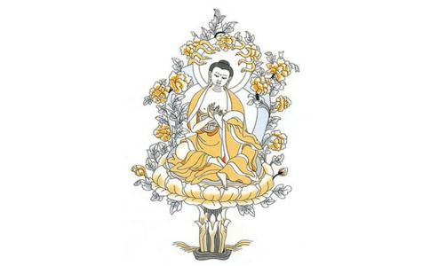

在佛教的历史上，从印度到中国，对弘扬大乘佛教贡献最大的当属龙树菩萨和无著菩萨，这两位菩萨都是佛陀在经典中授记过的圣者，也被后来的大乘佛教各个宗派都尊奉为共同的祖师。在了解了鸠摩罗什翻译的《龙树菩萨传》之后，我们除了对龙树菩萨充满敬佩之外，还应该从他的故事中得到一些启示才是。
一、如何看待自己，认识自己，完善自己
1. 做人要低调
不要翘尾巴龙树菩萨天资聪明，但是小时候却因为太过狂傲，以至于变成了不良少年，学隐身术，到王宫做出了一些让人觉得可耻的事情。由此可见，一个人聪明是好事，但一定不能因此而傲慢。苏东坡曾经说过，“人皆养子盼聪明，我被聪明误一生。”曹雪芹也在书里写道，“机关算尽太聪明，反误了卿卿性命。”所以做人啊，还是要谦虚低调点，还是要保持忠厚老实的本色才行的啊。
2.交朋友要谨慎
不要误交损友龙树菩萨年轻时候交的那三个朋友，也都是很杰出的优秀青年，但是因为没有在道德上完善自己，所以不知道应该把自己的才能用在做一些对国家和人民有意义的事情上。龙树菩萨交了这样的朋友，互相没有向好的方面促进，反而一起去做坏事去了，实在是很可惜的事情。所以我们在学佛中也要尽量交一些好的朋友，能够互相在好的方面有所促进。
3.要勇于承认错误
改正错误一个人犯了错误不可怕，只要能够勇于改正就仍然是个好人。龙树菩萨的事情也恰好证明了这个道理。龙树菩萨小时候犯的错误，实在来说是很严重的，是人生一个很大的污点。但是龙树菩萨在认识到自己的错误之后，幡然悔悟，走上了学佛的道路，从此改变了自己的一生，取得了如此巨大的成就，实在是善哉善哉。我们在学佛的过程中，也应该认识到自己的确是个凡夫的事实，不能总觉得我就是对的，总要跟人争辩个对错出来，而且即使自己错了也打死都不认错。这就是我执啊，是没有善根没有智慧的表现，真正有智慧的人是能够勇于承认自己的错误，改正自己的错误的。
4.要有自知之明
不能妄自尊大一个人稍微有了点成绩和名气的时候，一定要有自知之明。龙树菩萨在学完了小乘经典，打败了当时的外道和一些小乘论师之后，就觉得自己真的了不起了。这时候又有个外道故意的吹捧他，说他是无所不知的圣者了。龙树菩萨这么有智慧的人，已经有这么搞的成就了，都由此犯了妄自尊大的错误，打算开宗立派自己做祖师了，要制定新的戒律，制定新款式的衣服给自己的弟子穿。幸亏这个时候有个大龙菩萨及时点醒了他，不然的话，龙树菩萨也就成了附佛外道，而不可能真的成为菩萨了。我们现在很多的法师，最应该在这方面吸取教训，不能因为自己有一定的名气了，就觉得自己真的是了不起的高僧大德了，就真的觉得自己永远是对的，别人崇拜自己赞叹自己是天经地义的，甚至觉得自己可以开宗立派做祖师了。说真的，这样的后果是很可怕的，这样的行为和想法也是很可怜的，我们一定要认识到这一点才行。 5. 佛法无量无边，不能自满龙树菩萨在没有学佛之前，对于世间的学问已经觉得都掌握了，所以骄傲自满了一把，结果差点把自己的命搭上。后来学遍了小乘的佛教经典，又开始骄傲自满了，结果差点开宗立派成了附佛外道，如果不是大龙菩萨点醒了他的话，这个后果更可怕。龙树在龙宫里才知道佛法是多么的深奥广博，才知道自己以前的骄傲是多么的肤浅。我们现在学佛，经常是略有一知半解，就觉得自己已经掌握了佛法的全部了，也开始骄傲自满了。古人说，谦虚使人进步，骄傲使人落后。这句二十年前小学生整天写在课桌上的名言警句，我们现在还是有必要时常回味一下的。
二、如何对待他人，与别人相处
1.要尊重所有的人
要遵纪守法龙树菩萨小时候之所以成为不良少年，首要的原因就是缺乏对他人的尊重，不懂得尊重他人的人权，所以就会为了自己的欲乐而伤害他人；其次，是法律意识淡薄，不懂得遵纪守法是每个公民的义务，也是一个人的道德准则的体现。我们学习佛法，也是如此，首先要懂得尊重别人，时刻保持一颗平等心，知道每个人都跟自己是一样的，自己希望得到快乐，别人也不愿意痛苦，自己不愿意被人鄙视侮辱，别人也希望获得尊重和关心。所以，在对待别人的时候，一定要记得将心比心，由己及人。
2.要提防别人的忽悠、奉承和吹捧
学佛人之间是经常互相奉承和吹捧的，不但居士经常吹捧出家人，尤其是有点名气的法师，动不动就将一些“高僧大德”、“辩才无碍”、“善巧方便”之类的高帽子扣脑袋上，说真的，这样确实有些肉麻。即使学佛的居士互相之间，也经常互相奉承赞叹。也许奉承别人的人本身没有什么坏的心思，但是听的人要是抵抗能力不强的话，就会真的觉得自己了不起了，就会骄傲自满，妄自尊大了。龙树菩萨都差点抵抗不了外道的忽悠，自大的要开宗立派了，何况我们这些脑袋经常进水的凡夫俗子呢？所以听到有人赞叹自己的时候，一定不要被忽悠了。
3.要能够听从别人善意的劝告
龙树菩萨虽然差点被外道忽悠了，但是当大龙菩萨来点化他的时候，他还是很快就明白了自己的错误，可见菩萨毕竟是菩萨，善根的确是深厚的。我们在学佛的时候也是如此的，如果有同修劝我们改正错误的时候，一定要认真的想一想，不能为了面子而死不认错。
4.与人相处，要注意方式方法
龙树菩萨制服婆罗门外道的时候，直接使用法术，变出一个大白象，把那人摔的腰酸背痛腿抽筋，但是要度化不信佛的国王的时候呢，却宁可先去应聘做军官，给人家打打工，而且还不领工资。这就是菩萨为了度化不同根基的人，而采取不同的方式方法，这就是佛法说的善巧方便。我们平时与人相处，当然没有龙树菩萨那样的水平和本领，但是我们要领会这个精神，对别人说什么话，做什么事，尽量都要以能够促使别人在学习和修行上有所进步为目的，而不能为了跟别人争个高低，甚至争名夺利。
5.不能盲目的崇拜别人
龙树菩萨是大乘佛教中最值得我们尊崇的祖师，他对佛法的理解，他的修行境界，在佛陀之后唯有无著菩萨能够与之相比。但是，佛陀也明确的授记过，龙树菩萨和无著菩萨是初地的圣者，那么，试想一下，以龙树和无著这样的大菩萨的境界，才仅仅是初地的菩萨，我们其他的一些祖师或者高僧大德，总不会超越他们吧？现在佛教界经常有浮夸风的行为，动不动就宣扬某个法师是几地的菩萨，或者是什么菩萨再来，或者是什么什么转世，如果我们稍微清醒点的思考一下，就不会盲目的去搞这些个人崇拜了。为什么呢？龙树和无著两位佛授记过的菩萨，都仅仅是初地菩萨，提婆和世亲严格意义上来说还没有成为真正的圣者，我们如果盲目的推崇一些法师或者居士，岂不是很可笑的事情吗？所以，我们要尊重在佛法上获得成绩的人，但千万不能搞盲目的个人崇拜。佛法是理性的真理，佛教是理性的宗教，我们学佛，一定要做个理性的佛子才对。